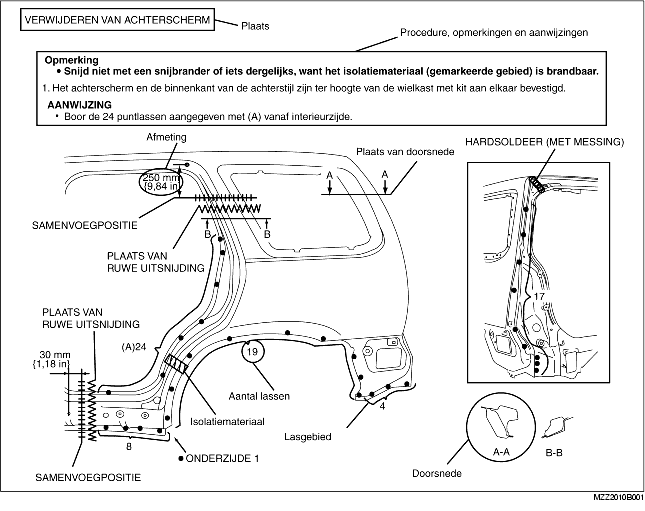
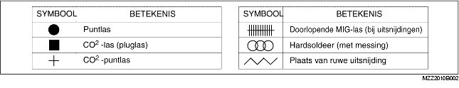
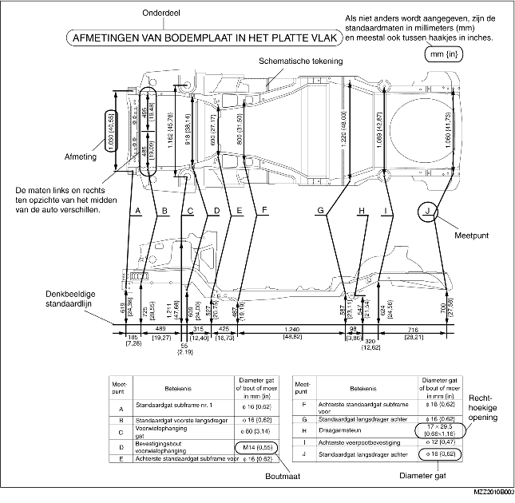
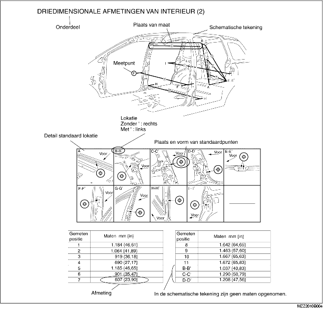
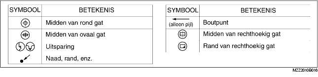

• Dit hoofdstuk bevat informatie omtrent de lasmethoden, aantal puntlassen, plaatsen van uitsnijdingen en lassen, van belang bij het vervangen van carrosseriedelen.
• Het soort las en de plaats ervan worden met symbolen aangegeven.
• Soms wordt ook nog een nadere uitleg van de werkzaamheden gegeven. Lees deze informatie grondig door voor het uitvoeren van de werkzaamheden.
Voorbeeld

• De navolgende 6 symbolen geven het soort las aan dat gebruikt wordt bij het vervangen van een plaatdeel.

• Afmetingen in het platte vlak worden verkregen door bepaalde referentiepunten te projecteren op een plat vlak.
• Als niet anders wordt aangegeven, zijn de standaard referentiepunten en maten symmetrisch ten opzichte van het midden van de auto.
• De denkbeeldige standaardlijnen kunnen per type auto afwijken.
Voorbeeld

• Driedimensionale afmetingen zijn de feitelijke afstanden tussen twee standaardpunten.
• Als niet anders wordt aangegeven, zijn de standaard referentiepunten en maten symmetrisch ten opzichte van het midden van de auto.
Voorbeeld

• De navolgende 8 symbolen geven de standaardpunten aan.
